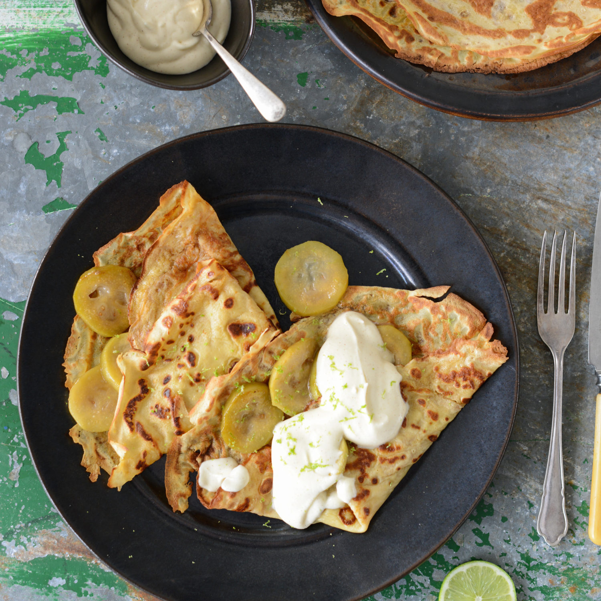

Feijoa and Lime Crepes with Cinnamon Yoghurt Cream

Feijoas are plentiful at this time of year. So make the most of them as they'll only be around for a short time.
INGREDIENTS
Feijoa Crepes
- ½ cup standard plain flour, gluten-free, or buckwheat flour
- ¼ teaspoon ground ginger
- 2 free-range eggs
- a pinch of salt
- ¾ cup milk
- 1 tablespoon sugar or liquid honey
- 2 tablespoons butter or coconut oil
- 6-8 feijoas peeled and sliced
- 1-2 teaspoons brown, coconut or muscavado sugar
- lime zest of 1
Cinnamon Yoghurt Cream
- ⅓ cup cream
- ¼ cup natural unsweetened yoghurt
- 1-2 teaspoons liquid honey to taste
- ½ teaspoon ground cinnamon
INSTRUCTIONS
- Sift flour and ground ginger into a mixing bowl. Whisk in eggs, salt and about 2-3 tablespoons of the milk, until smooth and there are no lumps.
- Gradually whisk in remaining milk and sugar or honey, until batter is smooth and there are no lumps. Set batter aside to rest for 15 minutes (this helps create more tender crepes).
- When ready to cook crepes, heat about 1 teaspoon of the butter/coconut oil in a medium-sized non-stick fry pan on medium heat and swirl around the pan. Scoop out about ¼ cup of crepe batter and add to the pan, whilst swirling the pan around to spread the batter in a very thin layer. Cook for 1-2 minutes until golden, then carefully flip over (using a thin rubber spatula or fish slice) to cook the other side for 1-2 minutes. Set crepes aside on a plate as you cook them, and keep warm.
- Melt a knob of butter/coconut oil in a separate large frying pan on a medium heat. Cook feijoas for 3-4 minutes, then add sugar and continue cooking for a further 1-2 minutes until caramelised.
- Whip cream until soft peaks form, then mix in yoghurt, honey and cinnamon.
- To serve, fill crepes with caramelised feijoas and lime zest, fold over in half, and then in half again. Arrange 2 crepes on each plate, and serve with a dollop of cinnamon yoghurt cream on the side. Sprinkle over a little more lime zest to garnish.
Return to main page